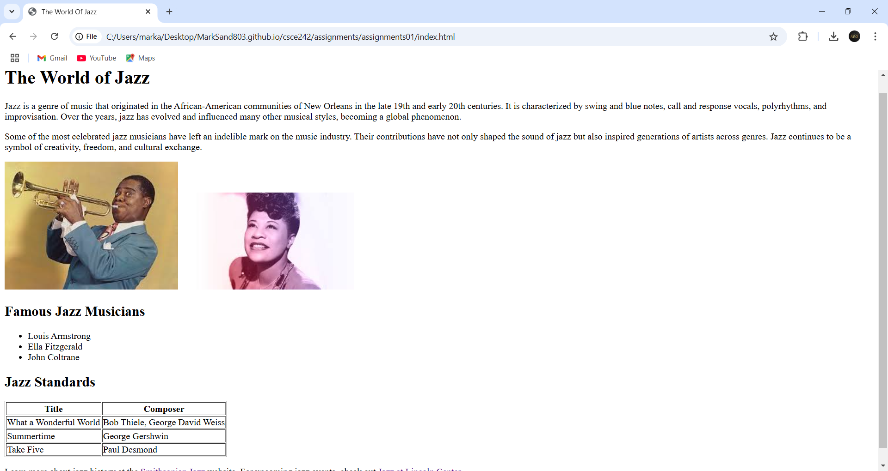
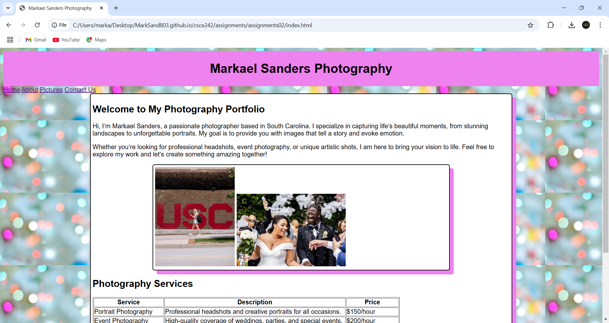
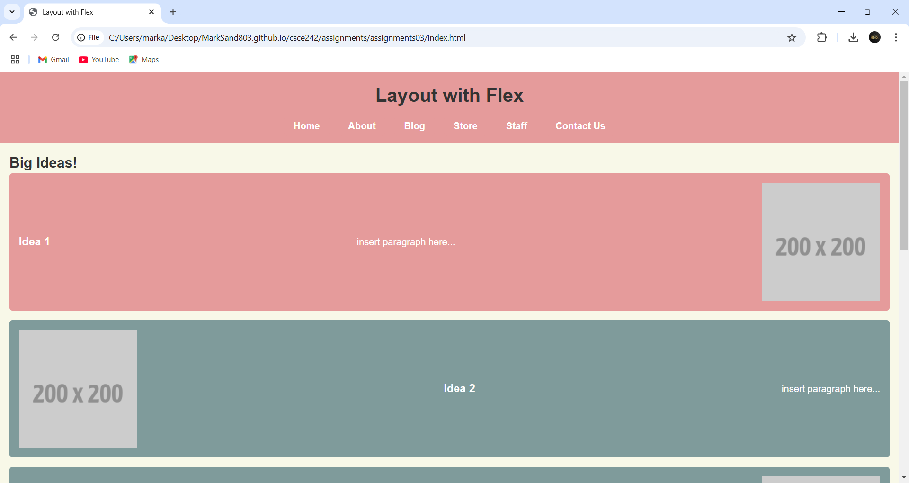
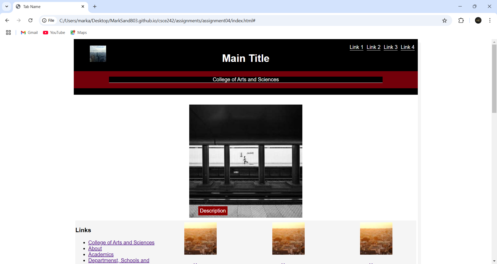
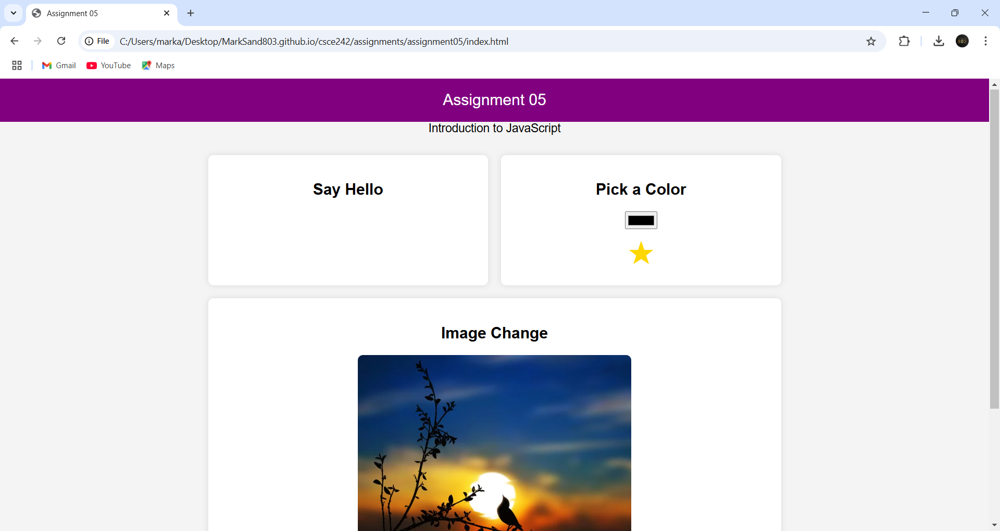
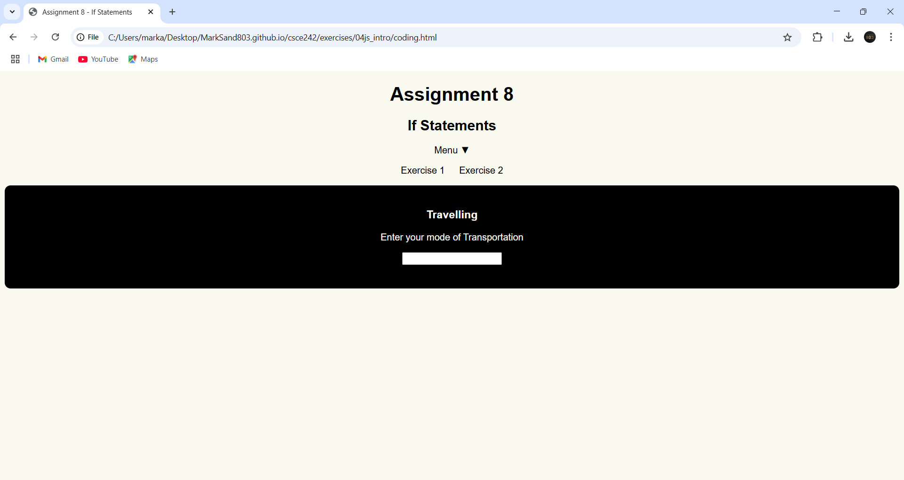
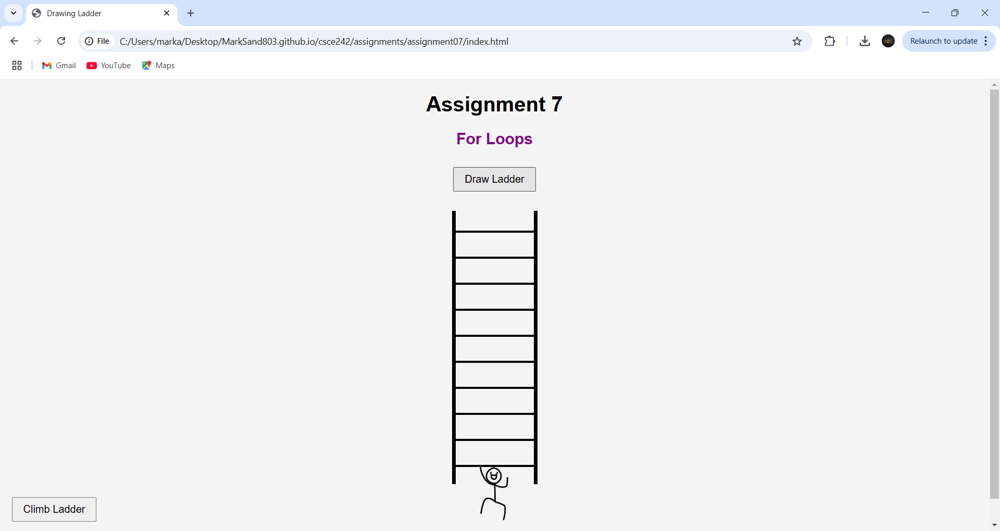
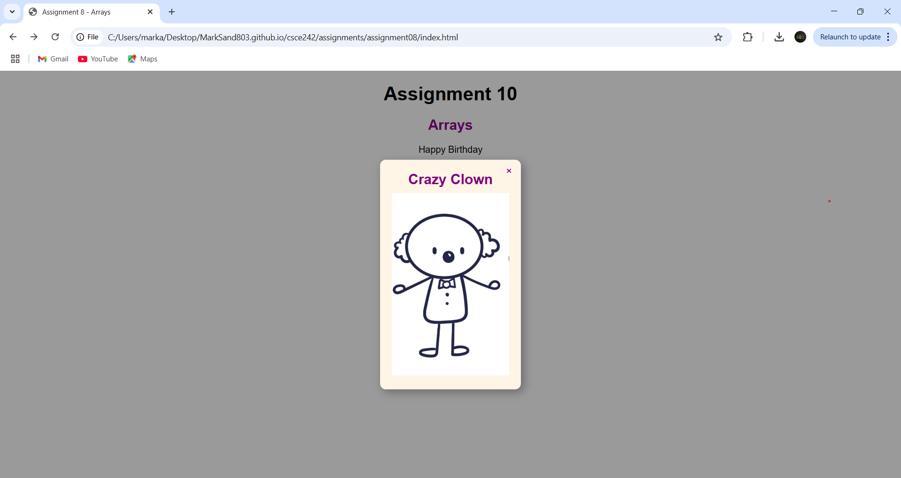
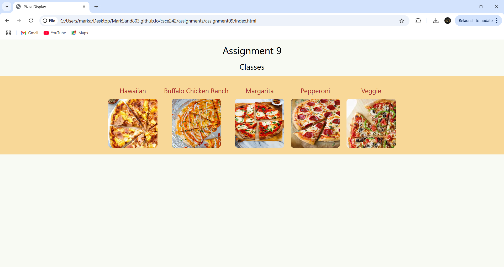
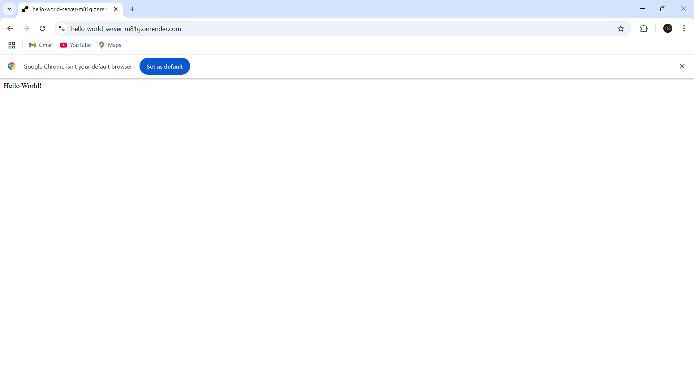

Assignment 1 - Basic HTML

The Basic HTML assignment focuses on creating the foundational structure of a webpage using HTML tags such as headings, paragraphs, links, and images. This assignment emphasizes semantic elements and introduces the concept of organizing content logically.
Assignment 2 - Basic CSS

The Basic CSS assignment teaches how to style a webpage by applying properties like color, font styles, margins, and padding. It explores the use of internal, external, and inline styles to enhance the visual presentation of an HTML document.
Assignment 3 - Page layout

The Layout with Flexbox assignment demonstrates how to create flexible, responsive layouts using CSS Flexbox. This includes aligning, spacing, and distributing elements dynamically within a container to achieve various layout designs.
Assignment 4 - Recreate CSS

This assignment requires recreating the University of South Carolina’s College of Arts and Sciences webpage using HTML and CSS while ensuring all links remain on the same page and substituting images and text with placeholders. The focus is on mastering layout replication using Flexbox while maintaining the original design's colors and structure, excluding interactive elements like animations, the search box, and nested navigation.
Assignment 5 - JavaScript

This assignment involves creating a responsive webpage using HTML, CSS, and JavaScript, featuring a three-column layout on larger screens and a single-column layout on mobile devices. The page includes interactive elements such as a button that appends "hello" on each click, a color picker that changes a star’s color, and an image that swaps when clicked.
Assignment 6 - Conditionals

Create a webpage with two sections, "Traveling" and "Color My Heart." The main content should be centered, and the menu should be responsive with a toggle for smaller screens. When users enter certain keywords in the "Traveling" section, a related image will appear. In the "Color My Heart" section, a button click will change the heart color using a single function.
Assignment 7 - Loops

This assignment involves creating an interactive web page where users can generate a ladder with 10 treads using a loop. A stick figure will appear ready to climb, and upon clicking "Climb Stairs," the figure will ascend step by step using `setInterval`, alternating between two images to simulate movement until reaching the top.
Assignment 8 - Arrays

This assignment focuses on using an associative array in JavaScript to dynamically generate a list of image titles. When a title is clicked, a popup appears displaying the corresponding image with a close button, styled with centering and a drop shadow for a polished UI.
Assignment 9 - Classes

For this assignment, I will create a class with at least six attributes and store multiple instances in an array. When I click on an item, a modal will display its details with an animation. I'll follow the w3schools modal example and ensure everything looks clean and well-aligned.
Assignment 2 Setup - Server Side HelloWorld

Deploy a "Hello World" Node.js server by setting up Node.js, creating a GitHub repository, testing it locally, and hosting it on Render, then submit links to your GitHub repo and live deployment.